Theory¶
This section summarizes key aspects of the theory implemented in DeerLab.
Assumptions¶
The theory underlying DeerLab is not fully general and makes a series of assumptions about the sample and the experiment. The important ones are:
- All spin labels are spin-1/2 or can be treated as such. High-spin systems are not handled by DeerLab.
- There are no more than two spin labels on a protein (or other cluster). Multi-spin effects are not handled by DeerLab.
- The unpaired electron spin density on the spin labels can be treated as localized in a single point. Delocalized spin systems are not handled by DeerLab.
- All spins have essentially isotropic g values close to 2.00232. Spins with large g shifts and anisotropic g tensors are not handled by DeerLab.
- There is no exchange coupling between any spins. The only interaction is through-space dipolar coupling. Exchange coupling is not handled by DeerLab.
- The dipolar coupling between spins is in the weak-coupling regime, i.e. it is weaker than the difference between their resonance frequencies. Intermediate- and strong-coupling regimes are not handled by DeerLab.
- All spins relax with the same phase memory time. Systems with rotamer-specific relaxation rates are not handled by DeerLab.
- The signal is free of modulations due to hyperfine couplings (ESEEM).
- There is no orientation selection in the experiment. Orientation-selective DEER is not handled by DeerLab.
Warning
If your sample and experiment do not satisfy all these assumptions, DeerLab will give incorrect results.
Dipolar signals and kernels¶
A dipolar signal 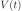 is calculated from a distance distribution  with the Fredholm integral of the first kind:
with the Fredholm integral of the first kind:

In this equation, 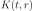 is the experiment-specific kernel representing how the signal is obtained from the distance distribution. Dipolar EPR experiments differ in the number and type of pulses, resulting in different number of dipolar pathways with different modulation amplitudes and refocusing times. In DeerLab, the signal from a general dipolar EPR experiment is modeled by the general kernel
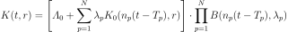
Here, 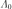 is the total amplitude of all unmodulated pathways, 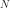 is the number of modulated pathways, 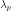 is the amplitude of the  th modulated pathway,
th modulated pathway,  is the refocusing time of the th modulated pathway, and 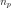 is the harmonic of the th pathway (most often,
is the refocusing time of the th modulated pathway, and 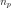 is the harmonic of the th pathway (most often,  ). 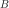 is the background decay function.
). 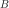 is the background decay function.
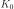 is the elementary kernel for a single dipolar pathway with 100% modulation amplitude and unlimited excitation bandwidth. It is given by
with the dipolar constant
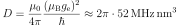
The closed-form expression for is
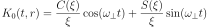
with 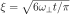 and the Fresnel cosine and sine integral functions
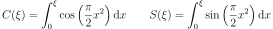
For the common model used to analyze 4-pulse DEER data, the kernel is
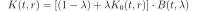
This is a special case of the general kernel, with  , 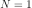, 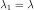, 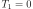, and 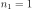.
, 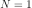, 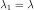, 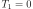, and 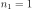.
Discretization¶
In DeerLab, all signals and distributions  are represented as discretized vectors 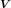 and 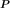 over discretized time domain 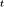 and distance domain
are represented as discretized vectors 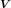 and 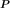 over discretized time domain 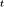 and distance domain  . Their elements are
. Their elements are
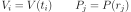
Distance distribution vectors must have non-negative elements and are assumed to be normalized such that
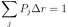
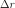 is the constant increment along the distance domain. DeerLab does not support non-linear distance vectors with non-constant increments.
All kernels 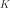 are discretized accordingly to give kernel matrices with elements
With this, a signal is obtained from a distance distribution via
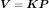
Least-squares fitting¶
DeerLab uses dedicated least-squares solvers to fit models to data. The objective function and the solver depend on whether the distance distribution is parametric or non-parametric, and on whether there are background and experiment parameters to fit alongside the distance distribution.
Parametric distribution¶
To fit a model with a parametric distance distribution to an experimental signal, DeerLab solves
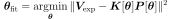
where 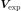 indicates the experimental data and 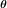 is a vector of all parameters (distribution parameters, background parameters, experiment parameters). Various constrained least-squares solvers are implemented.
Non-parametric distribution¶
To fit a model with a non-parametric distribution and no additional fitting parameters to an experimental signal, DeerLab implements several regularization approaches. The most common one is Tikhonov regularization. For this, the minimization problem is
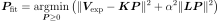
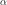 is the regularization parameter, and 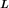 is the regularization operator matrix. DeerLab implements the linear non-negative least-squares solver FNNLS, as well as a few others. The parameter can be optimized using a range of criteria, including L-curve, Akaike information criterion (AIC), and generalized cross validation (GCV).
To fit a model with a non-parametric distance distribution and other parameters to an experimental signal, DeerLab solves
This problem is solved directly, i.e. both ad are fitted simultaneously. To achieve this, DeerLab implements a nested optimization approach that includes regularization.